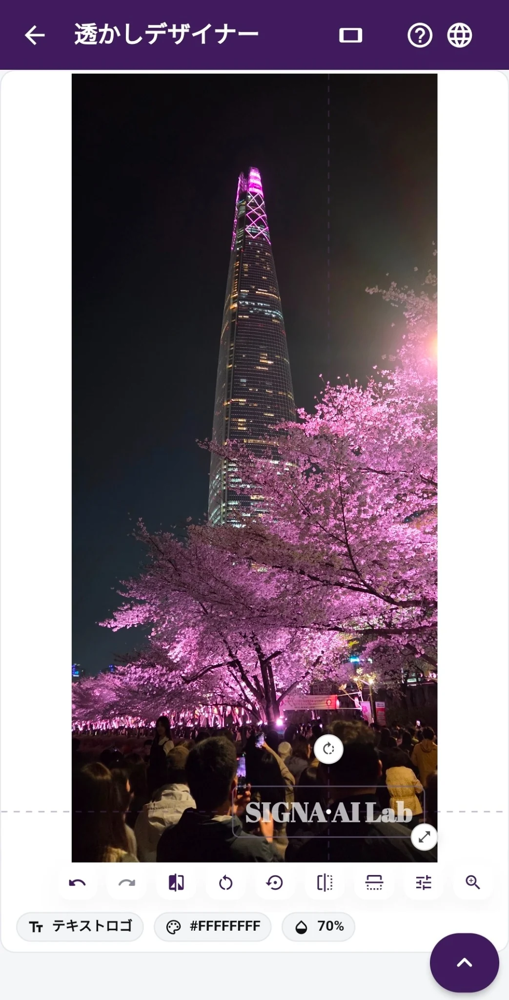

01 · 透かし · 無料で何度でも追加
複数の写真にまとめて透かしを
文字を入れるなら、標準フォントから好みの一つを。お手持ちのロゴを読み込めるほか、イニシャルや紙に書いた文字の写真からロゴを作れます。画面に直接サインを書いて使うのも簡単です。文字の色や透け具合も選べます。位置と大きさは一枚ずつ調整でき、気に入ったデザインは保存できます。設定をオンにすれば、見えないSIGNAシグナルも一緒に追加できます。
最大12枚に一括で透かしを追加。写真ごとに配置の提案を受けられ、位置の調整や提案の取り消しもできます。
縦長・横長対応 · 最大12枚 · 写真ごとに位置を調整 · デザイン保存 · Proの追加フォント
 アプリ画面を拡大する ↗
アプリ画面を拡大する ↗

